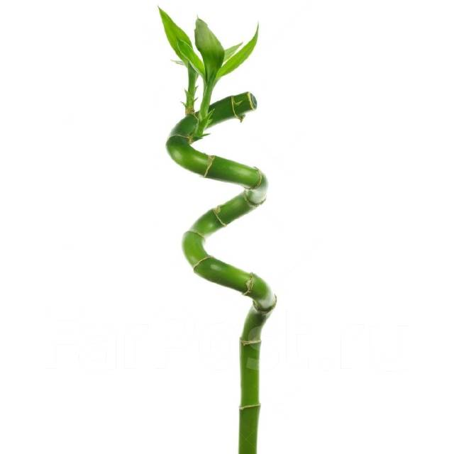

Драцена Сандера
Ставшее уже культовым растение Счастливый бамбук, которое распространилось по всему миру под этим незатейливым именем, кроме схожей внешности, с бамбуками не имеет ничего общего. С первого взгляда трудно угадать в растении одну из драцен, но именно к семейству самых популярных комнатных «пальм» принадлежит эта удивительная культура. Действительно ли «бамбук счастья» (Lucky Bamboo) притягивает удачу, счастье и блага — вопрос спорный. Но это растение прекрасно, самобытно и меняет атмосферу в любом помещении. Простой в выращивании, неприхотливый и выносливый, псевдобамбук заслуживает звания одного из самых легких в уходе комнатных любимцев.
Счастливый бамбук в комнатной культуре обычно не болеет. Только в сильно запущенном состоянии, при загрязнении воды и отклонении от привычной стратегии ухода, соседстве с пораженными культурами ему могут досаждать мучнистые червецы, красные паутинные клещи. Бороться с вредителями можно при помощи инсектицидов, но проще заменить культуру на новые растения.
Под именем бамбук счастья очаровательный и не такой уж и редкий вид драцен — Драцена Сандера, или сандериана (Dracaena Sanderiana) распространился по всему миру. Но это милое прозвище стало причиной немалой путаницы: даже в цветочных лавках опытные консультанты чаще всего уверены, что эта культура — комнатный бамбук. Но как бы там ни было, растение это отличается и от легендарного бамбука, и от знакомых нам драцен и внешне, и по технологии выращивания.